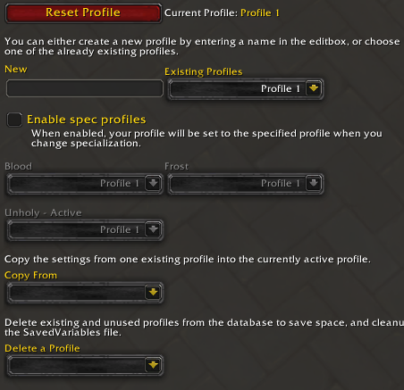

Addon World of Warcraft
Gestion facile des profils
Description du projet
Cet addon permet de centraliser en une fenêtre le choix des profils des autres addons installés ainsi que le profil de base en jeu.
Caractéristiques
| Catégorie | Détails |
|---|---|
| Technologies | Lua, API de Blizzard |
| Durée | 2 semaines |
| Fonctionnalités clés |
|
| Difficultés rencontrées |
|
| Compétences acquises |
|
